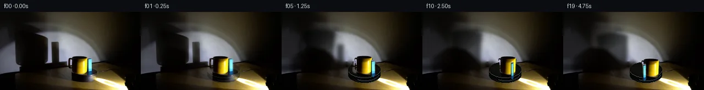

![首帧]()

Round 00
2026-11-05T00:51:32.484318+00:00像素候选变化代码 +304/−0inspection 更新
pixels 773ac465d46180ef · code 2d070e25b20fdd1d
查看本轮 generate.py 真实 diff
--- previous/generate.py
+++ current/generate.py
@@ -0,0 +1,304 @@
+#!/usr/bin/env python3
+"""Generate the 20-frame PixelWorld continuation using local pixel operations."""
+
+from pathlib import Path
+import math
+
+import cv2
+import numpy as np
+from PIL import Image, ImageDraw, ImageFilter, ImageFont
+
+import artifact_io
+
+
+ROOT = Path(__file__).resolve().parent
+W, H = 256, 144
+PIVOT = np.array([149.0, 105.0])
+
+
+def soft_shape_mask(draw_fn, blur=0.7):
+ """Return an antialiased L mask made at 4x resolution."""
+ scale = 4
+ canvas = Image.new("L", (W * scale, H * scale), 0)
+ d = ImageDraw.Draw(canvas)
+
+ class ScaledDraw:
+ def ellipse(self, box, **kw):
+ d.ellipse(tuple(int(round(v * scale)) for v in box), **kw)
+
+ def polygon(self, xy, **kw):
+ d.polygon([(int(round(x * scale)), int(round(y * scale))) for x, y in xy], **kw)
+
+ def rounded_rectangle(self, box, radius, **kw):
+ d.rounded_rectangle(tuple(int(round(v * scale)) for v in box),
+ radius=int(round(radius * scale)), **kw)
+
+ def rectangle(self, box, **kw):
+ d.rectangle(tuple(int(round(v * scale)) for v in box), **kw)
+
+ draw_fn(ScaledDraw())
+ canvas = canvas.resize((W, H), Image.Resampling.LANCZOS)
+ if blur:
+ canvas = canvas.filter(ImageFilter.GaussianBlur(blur))
+ return np.asarray(canvas, dtype=np.float32) / 255.0
+
+
+def alpha_over(dst, src, alpha):
+ """Composite RGB src over RGB dst with scalar image alpha."""
+ a = np.clip(alpha, 0.0, 1.0)[..., None]
+ return dst * (1.0 - a) + src * a
+
+
+def warp_sprite(rgb, alpha, matrix):
+ """Apply one affine transform to a full-frame sprite and its alpha."""
+ wrgb = cv2.warpAffine(rgb, matrix, (W, H), flags=cv2.INTER_CUBIC,
+ borderMode=cv2.BORDER_CONSTANT, borderValue=(0, 0, 0))
+ wa = cv2.warpAffine(alpha, matrix, (W, H), flags=cv2.INTER_CUBIC,
+ borderMode=cv2.BORDER_CONSTANT, borderValue=0)
+ return wrgb.astype(np.float32), np.clip(wa, 0, 1)
+
+
+def affine_about(anchor, target, sx=1.0):
+ """Horizontal scale about source anchor, then translate it to target."""
+ ax, ay = anchor
+ tx, ty = target
+ return np.array([[sx, 0.0, tx - sx * ax], [0.0, 1.0, ty - ay]], dtype=np.float32)
+
+
+def orbital_point(initial, theta):
+ """Clockwise rotation in turntable coordinates, projected to screen."""
+ rel = np.asarray(initial, dtype=float) - PIVOT
+ plane = np.array([rel[0], rel[1] / 0.45])
+ c, s = math.cos(theta), math.sin(theta)
+ turned = np.array([plane[0] * c - plane[1] * s,
+ plane[0] * s + plane[1] * c])
+ return PIVOT + np.array([turned[0], turned[1] * 0.45])
+
+
+def make_clean_background(source):
+ """Remove original apparatus/shadow and reconstruct the small hidden areas."""
+ src = source.copy()
+
+ # Remove the original large hard-edged shadow from the wall. Telea inpaint
+ # borrows the existing smooth spotlight falloff from all sides.
+ shadow_mask = np.zeros((H, W), np.uint8)
+ wall_poly = np.array([[19, 25], [52, 18], [88, 30], [117, 52],
+ [117, 104], [0, 111], [0, 62]], np.int32)
+ cv2.fillPoly(shadow_mask, [wall_poly], 255)
… diff truncated; 217 more lines …